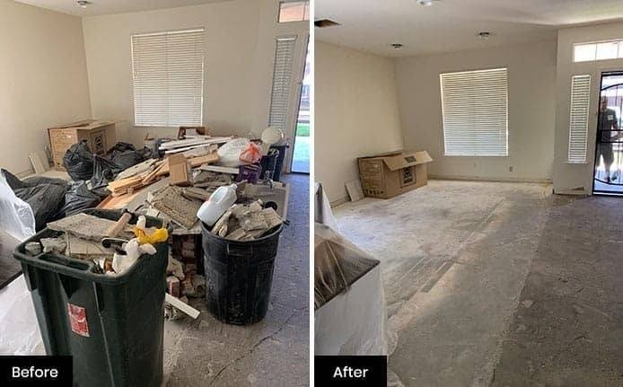
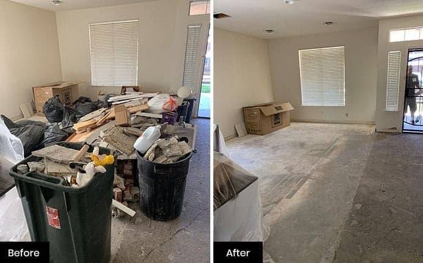

Junk Experts of Savannah
We proudly serve Savannah and beyond — no job too big or small!
Our Services
At Junk Experts, we offer fast, friendly, and reliable junk removal for residential, commercial, and construction sites. Whether it's clearing a garage, cleaning up a yard, or organizing a whole home — no job is too big or too small. We recycle, donate, and dispose responsibly. One call clears it all!
- Household Cleanouts
- Garage Organization
- Furniture Hauling
- Construction Debris Removal
- Estate Cleanups
- Recycling & Donations
- Attic cleanout
- Storage Container
- HOA Trash/Junk Relief
- Large and Small Pick-ups
Call today to get your free quote and in-person estimate. We are a Fast, quality service you can count on!
📞 Call us now: 951-468-5865
And remember: if you're ever in need, 951-GOT-JUNK is
your friend indeed!
Gallery


 
